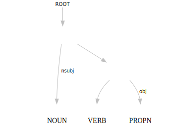

Interactive online version:


Thai Dependency Parser
PyThaiNLP does not come with a dependency parser. Instead, you can use the dependency parser from spaCy-Thai, which was trained on Universal Dependencies. This tutorial shows you how to get started.
Install spaCy-Thai.
[1]:
!pip install spacy_thai
Collecting spacy_thai
Downloading https://files.pythonhosted.org/packages/ca/2d/c2e71a4143d6d9cd9db6744e328dfb9f65b98ad7607644d0ad4369bce303/spacy_thai-0.6.2-py3-none-any.whl (5.1MB)
|████████████████████████████████| 5.1MB 11.2MB/s
Collecting ufal.udpipe>=1.2.0
Downloading https://files.pythonhosted.org/packages/e5/72/2b8b9dc7c80017c790bb3308bbad34b57accfed2ac2f1f4ab252ff4e9cb2/ufal.udpipe-1.2.0.3.tar.gz (304kB)
|████████████████████████████████| 307kB 45.8MB/s
Requirement already satisfied: spacy>=2.2.2 in /usr/local/lib/python3.7/dist-packages (from spacy_thai) (2.2.4)
Collecting deplacy>=1.9.2
Downloading https://files.pythonhosted.org/packages/11/58/87b6286c9578fc456de1363f877228ee0d117b8de238e3e2cd49dbc06eaa/deplacy-1.9.3-py3-none-any.whl
Collecting pythainlp>=2.2.6
Downloading https://files.pythonhosted.org/packages/c1/09/1215cb6f6ef0cfc9dbb427a961fda8a47c111955f782f659ca2d38c79adc/pythainlp-2.2.6-py3-none-any.whl (10.6MB)
|████████████████████████████████| 10.6MB 28.7MB/s
Requirement already satisfied: srsly<1.1.0,>=1.0.2 in /usr/local/lib/python3.7/dist-packages (from spacy>=2.2.2->spacy_thai) (1.0.5)
Requirement already satisfied: requests<3.0.0,>=2.13.0 in /usr/local/lib/python3.7/dist-packages (from spacy>=2.2.2->spacy_thai) (2.23.0)
Requirement already satisfied: thinc==7.4.0 in /usr/local/lib/python3.7/dist-packages (from spacy>=2.2.2->spacy_thai) (7.4.0)
Requirement already satisfied: preshed<3.1.0,>=3.0.2 in /usr/local/lib/python3.7/dist-packages (from spacy>=2.2.2->spacy_thai) (3.0.5)
Requirement already satisfied: wasabi<1.1.0,>=0.4.0 in /usr/local/lib/python3.7/dist-packages (from spacy>=2.2.2->spacy_thai) (0.8.2)
Requirement already satisfied: plac<1.2.0,>=0.9.6 in /usr/local/lib/python3.7/dist-packages (from spacy>=2.2.2->spacy_thai) (1.1.3)
Requirement already satisfied: cymem<2.1.0,>=2.0.2 in /usr/local/lib/python3.7/dist-packages (from spacy>=2.2.2->spacy_thai) (2.0.5)
Requirement already satisfied: blis<0.5.0,>=0.4.0 in /usr/local/lib/python3.7/dist-packages (from spacy>=2.2.2->spacy_thai) (0.4.1)
Requirement already satisfied: tqdm<5.0.0,>=4.38.0 in /usr/local/lib/python3.7/dist-packages (from spacy>=2.2.2->spacy_thai) (4.41.1)
Requirement already satisfied: murmurhash<1.1.0,>=0.28.0 in /usr/local/lib/python3.7/dist-packages (from spacy>=2.2.2->spacy_thai) (1.0.5)
Requirement already satisfied: numpy>=1.15.0 in /usr/local/lib/python3.7/dist-packages (from spacy>=2.2.2->spacy_thai) (1.19.5)
Requirement already satisfied: catalogue<1.1.0,>=0.0.7 in /usr/local/lib/python3.7/dist-packages (from spacy>=2.2.2->spacy_thai) (1.0.0)
Requirement already satisfied: setuptools in /usr/local/lib/python3.7/dist-packages (from spacy>=2.2.2->spacy_thai) (54.1.2)
Collecting tinydb>=3.0
Downloading https://files.pythonhosted.org/packages/af/cd/1ce3d93818cdeda0446b8033d21e5f32daeb3a866bbafd878a9a62058a9c/tinydb-4.4.0-py3-none-any.whl
Collecting python-crfsuite>=0.9.6
Downloading https://files.pythonhosted.org/packages/79/47/58f16c46506139f17de4630dbcfb877ce41a6355a1bbf3c443edb9708429/python_crfsuite-0.9.7-cp37-cp37m-manylinux1_x86_64.whl (743kB)
|████████████████████████████████| 747kB 68.5MB/s
Requirement already satisfied: chardet<4,>=3.0.2 in /usr/local/lib/python3.7/dist-packages (from requests<3.0.0,>=2.13.0->spacy>=2.2.2->spacy_thai) (3.0.4)
Requirement already satisfied: urllib3!=1.25.0,!=1.25.1,<1.26,>=1.21.1 in /usr/local/lib/python3.7/dist-packages (from requests<3.0.0,>=2.13.0->spacy>=2.2.2->spacy_thai) (1.24.3)
Requirement already satisfied: certifi>=2017.4.17 in /usr/local/lib/python3.7/dist-packages (from requests<3.0.0,>=2.13.0->spacy>=2.2.2->spacy_thai) (2020.12.5)
Requirement already satisfied: idna<3,>=2.5 in /usr/local/lib/python3.7/dist-packages (from requests<3.0.0,>=2.13.0->spacy>=2.2.2->spacy_thai) (2.10)
Requirement already satisfied: importlib-metadata>=0.20; python_version < "3.8" in /usr/local/lib/python3.7/dist-packages (from catalogue<1.1.0,>=0.0.7->spacy>=2.2.2->spacy_thai) (3.7.2)
Requirement already satisfied: typing-extensions>=3.6.4; python_version < "3.8" in /usr/local/lib/python3.7/dist-packages (from importlib-metadata>=0.20; python_version < "3.8"->catalogue<1.1.0,>=0.0.7->spacy>=2.2.2->spacy_thai) (3.7.4.3)
Requirement already satisfied: zipp>=0.5 in /usr/local/lib/python3.7/dist-packages (from importlib-metadata>=0.20; python_version < "3.8"->catalogue<1.1.0,>=0.0.7->spacy>=2.2.2->spacy_thai) (3.4.1)
Building wheels for collected packages: ufal.udpipe
Building wheel for ufal.udpipe (setup.py) ... done
Created wheel for ufal.udpipe: filename=ufal.udpipe-1.2.0.3-cp37-cp37m-linux_x86_64.whl size=5626703 sha256=a58565fc21a1f9d3a7c51a3aea138cf612babbefb36ae05cbaccec852b55d967
Stored in directory: /root/.cache/pip/wheels/0c/9d/db/6d3404c33da5b7adb6c6972853efb6a27649d3ba15f7e9bebb
Successfully built ufal.udpipe
Installing collected packages: ufal.udpipe, deplacy, tinydb, python-crfsuite, pythainlp, spacy-thai
Successfully installed deplacy-1.9.3 pythainlp-2.2.6 python-crfsuite-0.9.7 spacy-thai-0.6.2 tinydb-4.4.0 ufal.udpipe-1.2.0.3
Import spaCy-Thai.
[2]:
import spacy_thai
nlp=spacy_thai.load()
Do the dependency parse by calling nlp on a sentence.
[3]:
doc=nlp("พวกเราใช้ภาษาไทย")
You can visualize the dependency parse with deplacy, a tree visualizer for Universal Dependencies.
[4]:
import graphviz
import deplacy
graphviz.Source(deplacy.dot(doc))
[4]:
